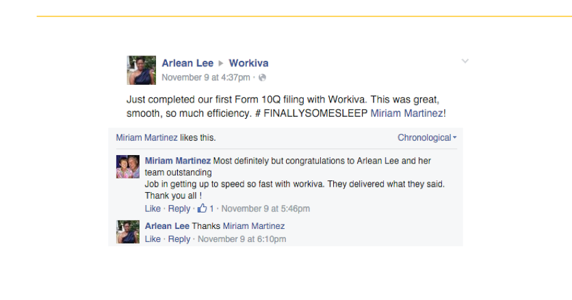
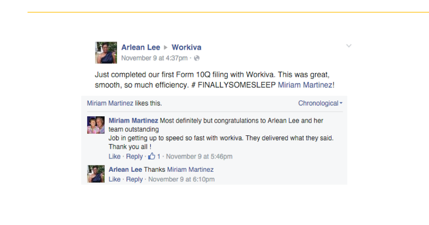

Overview:
Workiva, a public accounting SaaS solution that's designed for high-regulation environments, wanted to better understand their brand reputation, how their customers arrived at a purchasing decision, and how to optimally position their product in the sales process.
I
Objectives:
Objective #1: Redesign outdated website and implement a cohesive marketing strategy to create a modern communications funnel.
Objective #2: Increase industry brand awareness.
Objective #3: Generate warm leads for sales to have better initial conversations with prospects.
Audience Messaging:
I decided to highlight their brand's unique value offerings: extremely customizable systems, and delightful customer service representatives to help scientists navigate the complex process of integrating new technology with their existing workflow.
Public Perceptions & Competitive Insight:
Workiva actually had a great reputation in online accounting circles for
its easy to use interface and robust reporting capabilities.
Plan:
Collect data on brand perceptions and sales process insights from a variety of quantitative (e.g. public accounting software stats) and qualitative (e.g. accounting forums, social networks) sources.
Integrate this data into current understandings of the
Workiva
customer decision journey.
Analyze conversations about what's important when it comes to decision-makers assessing the purchas of an enterprise accounting solution.
Develop tactical sales guidelines for Workiva reps to align product positioning with the updated CDJ guidelines.
Execution:
Data Collection
 

A blend of quantitative and qualitative data.
Customer Decision Journey Analysis
Three Important CDJ Stages =
1. [Awareness > Intrigue > Consideration]
2. [Convince > Acquisition >
Purchase Decision > Purchase]
3. [Getting Started > Onboarding > Beyond Initial Use > Advocacy]
Tactical Sales Recommendations
A useful guide for Workiva sales reps.
Results:
I brought to light many intuitions the Workiva team had about their product and audiences.
They now have tailored insight into their distinct user and decision-maker pain points.
They've made a commitment to implementing these updated sales strategies, because they're based in real-world data.